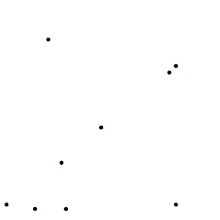
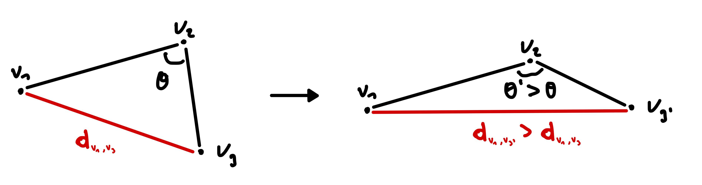
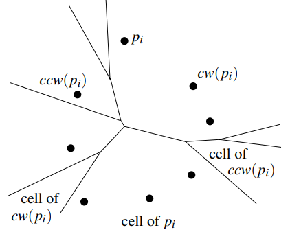

🌟 Introduction
In geometry and optimization, one fundamental challenge is to find shapes or curves that maximize or minimize a particular property while adhering to strict constraints. These problems often involve maximizing enclosed area or minimizing perimeter, giving rise to the family of isoperimetric problems.
A classical example, known since ancient Greece, demonstrates that among all closed curves with a fixed perimeter \( P \), the circle encloses the maximum possible area. This result, rigorously formalized in the 19th century as the *Isoperimetric Theorem*, highlights the exceptional properties of the circle as the optimal solution in this context.
Let the perimeter of a square be \( P \). The side length of the square is \[ s = \frac{P}{4}. \] The area of the square is then \[ A_\text{square} = s^2 = \left(\frac{P}{4}\right)^2 = \frac{P^2}{16}. \]
For a circle with the same perimeter \( P \), the circumference is given by \[ 2\pi r = P \quad \Rightarrow \quad r = \frac{P}{2\pi}. \] The area of the circle is \[ A_\text{circle} = \pi r^2 = \pi \left(\frac{P}{2\pi}\right)^2 = \frac{P^2}{4\pi}. \]
To compare, compute the ratio of the circle's area to the square's area: \[ \frac{A_\text{circle}}{A_\text{square}} = \frac{\frac{P^2}{4\pi}}{\frac{P^2}{16}} = \frac{16}{4\pi} = \frac{4}{\pi}. \]
Since \( \pi < 4 \), we have \( \frac{4}{\pi} > 1 \), implying \( A_\text{circle} > A_\text{square} \). Thus, for the same perimeter, the circle covers a larger area than the square.
Why Does This Happen?
A square has four straight edges that meet at right angles, which means some of the space near the corners is not optimally enclosed for maximizing area. In contrast, a circle has no corners or straight edges, allowing it to make the most efficient use of its perimeter to enclose space.
This property of the circle minimizes "wasted" space, making it the optimal shape for enclosing the maximum area for a given perimeter. This is why, for the same \( P \), the circle surpasses the square in area coverage.
Voronoi Diagrams
A Voronoi diagram is a partition of the plane into regions based on the distance to a given set of points. Each region corresponds to all locations closer to one particular point than to any other.
While Fortune's algorithm allows constructing a Voronoi diagram in \(O(n \log n)\) time for \(n\) points, we use an alternative approach here for simplicity. This method involves intersecting half-planes defined by bisectors of point pairs, computing the dual of the points, and applying a convex hull algorithm. The resulting complexity is \(O(n^2 \log n)\).

🎨 Draw points to generate a Voronoi diagram:
📖 Explanation of the Problem
Problem Statement
Let \(S\) be a set of \(n > 2\) points in the plane, and let \(P > 0\) be a given value. Among all the curves of perimeter \(P\) that enclose \(S\), which curve encloses the maximum area? This question leads to a fascinating interplay between convex geometry and optimization.
Convexity
It is important to note that the shortest enclosing curve for a given set of points is always the convex hull, whereas the largest area is enclosed by a circle. This observation forms the basis for analyzing the optimal shape for a given perimeter \(P\).
To explore this property consider the following interactive zone: We can see that for a fixed perimeter the convex polygon enclose always a bigger area than the non-convex one.
🎨 Draw a non-convex polygon and convexify it to see this principle in action:
Cauchy’s Arm Lemma
Cauchy’s Arm Lemma provides an important geometric result that plays a critical role in solving the problem. The lemma states:
In simpler terms, modifying the angles of a convex shape while preserving the edge lengths can increase the distance between certain points.
To visualize this concept, consider the following example:
🎨 Draw a convex polygon and modify the angles to see Cauchy’s Arm Lemma in action:
🔧 The Implementation
Farthest Point Voronoi Diagram
A Farthest Point Voronoi Diagram is a special type of Voronoi diagram where each cell corresponds to the region of the plane farthest from a specific site (point) compared to all other sites. Unlike a standard Voronoi diagram, where regions contain points closest to a given site, the regions in a Farthest Point Voronoi diagram expand outward, capturing areas maximally distant from the sites.
These diagrams are particularly useful in problems where the farthest distance is of interest, such as constructing the boundary of shapes or solving optimization problems involving enclosing regions.
Why Use Farthest Point Voronoi Diagrams?
In the context of the isoperimetric problem, the Farthest Point Voronoi diagram helps identify the critical points and edges necessary for constructing the optimal curve. The diagram allows efficient computation of regions where circular arcs (with the same radius) will form parts of the solution curve.
🚀 How to Implement the Farthest Point Voronoi Diagram
🧮 Steps to Implement the Algorithm
- Compute the convex hull: Start by finding the convex hull of the set of points. Only the points on the convex hull can have cells in the farthest-point Voronoi diagram, so there are our new sites now.
- Remove almost all sites: Remove n-3 sites randomly from the diagram. For each site, keep note of the clockwise(cw) and counterclockwise(ccw) sites neighbours at time of removal.
- Initialise the FPVD with the three last points: It is easy to construct the FPVD of three points because it is just the three bisectors of the three points cut at the intersection.
- Insert back the removed vertices: This must be done in the reverse order of removal.
- Move clockwisely in the cell of ccw and find the intersection q with the perpendicular bisector of ccw and the point you are adding.
- Find the other cell V(j) containing q.
- Find the second intersection point q2 with the perpendicular bisector of j and p in V(j).
- Do those steps again until j is cw.
- Construct the cell V(p) with all the intersection points and the perpendicular bisectors of p-cw and p-ccw.
- Merge the cell with the FPVD and drop any element strictly inside the cell.
This algorithm can be executed in \(O(n \log n)\) time, and \(O(n)\) storage.
🎨 Draw points to generate the Farthest Point Voronoi diagram:
Optimal Curve
The optimal curve is computed by balancing the constraints of a fixed perimeter \(P\) and the requirement to enclose the maximum area. This involves iterative adjustments to ensure convexity and area maximization, which can be visualized interactively:
📐 How to Implement the Optimal Curve (\((P,Q)\)-Curve)
The \((P,Q)\)-curve of maximum area is a convex curve of fixed perimeter \(P\) that encloses a convex polygon \(Q\). This guide describes the steps to compute the curve using theoretical principles and algorithms from the paper.
- The curve consists of one or more circular arcs of equal radius, and its endpoints are vertices of \(Q\).
- For \(P \geq \text{perimeter}(\mathcal{B}_Q)\), the solution is a circle with perimeter \(P\) enclosing \(Q\).
- For \(P < \text{perimeter}(\mathcal{B}_Q)\), the curve is the boundary of the intersection of disks with radius \(r\) that contain \(Q\).
🧮 Steps to Compute the \((P, Q)\)-curve
- Compute the Convex Hull: If given a set of points, determine the convex hull \(Q\) in \(O(n \log n)\) time.
- Construct the Farthest-Point Voronoi Diagram: Compute the farthest-point Voronoi diagram of the vertices of \(Q\) in \(O(n)\) time.
- Find the Radius \(r\):
- Use a binary search to find \(r\) such that the curve’s perimeter is close to \(P\).
- The radius is approximated using the farthest-point Voronoi diagram.
- Construct the Curve: Use \(r\) to define circular arcs and segments along the boundary of \(Q\). Ensure arcs have the same radius and endpoints lie on \(Q\).
🎨 Draw points, set the perimeter, and visualize the optimal curve:
🔍 Hardness Results
In geometric optimization, solving problems often involves balancing between precision and computational feasibility. The isoperimetric problem we explore here is no exception: while some solutions can be derived exactly using closed-form expressions, others challenge the limits of mathematical computation.
Why Some Equations Can Be Solved Exactly
Mathematical equations, particularly polynomials, can often be solved exactly using techniques involving basic arithmetic (\(+, -, \cdot, \div \)) and roots (\( \sqrt[k]{}\)). For example, the solution to a quadratic equation \(ax^2 + bx + c = 0 \) is well-defined by the quadratic formula. Similarly, cubic and quartic equations have closed-form solutions. These belong to a class known as "solvable by radicals."
When Equations Defy Exact Solutions
Once the degree of a polynomial exceeds four, things get trickier. Not all quintic equations (degree 5) can be solved exactly using traditional techniques. For instance, the equation \(x^5 − x + 1 = 0\) is unsolvable by radicals, as proven through Galois theory. In these cases, we often rely on approximations or numerical methods.
Linking This to Isoperimetric Problems
In our problem, we aim to find the curve of fixed perimeter \(P\) that encloses a convex shape \(Q\) while maximizing the enclosed area. This curve, denoted as \((P, Q)-curve\), consists of circular arcs of equal radius \(r\). However, determining the exact value of \(r\) often leads to solving equations like: \[ \sum_{i=1}^{k} 2r \cdot \arcsin(d_i/r) = P \] Here, \(d_i\) represents distances between vertices of \(Q\). Unlike polynomials, this equation is transcendental, meaning it involves functions like \(sin\), \(arcsin\), and \(log\). Solving such equations exactly depends on deep mathematical conjectures like Schanuel's Conjecture. As of today, proofs for such conjectures remain out of reach.
Implications
Since exact solutions to transcendental equations are not always possible, we rely on approximation algorithms. In our case, we approximate the radius \(r\) to arbitrary precision, ensuring the solution retains its structure while coming as close as possible to the true value.
This hardness result highlights the limitations of computation in geometry. It is a reminder of how mathematical theory and computational techniques intersect, leading to new challenges and innovative solutions.
👷♂️ Team Responsibilities
Charels Hugo: Built the overall structure of the project and is responsible for the report. Implemented the Voronoi Diagram, the Optimal Curve, and the Hardness Results analysis.
Installé Arthur: Focused on implementing the Convexify Polygon algorithm and the Farthest-Point Voronoi Diagram.
Caeyman Hamza: Implemented Cauchy's Arm Lemma.